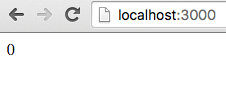

Hello World!
In main.js there's just one function run which starts the application.
import run from './boilerplate';
import view from './hello-world/view';
import updater from './hello-world/updater';
run('app', view, updater);
run starts the application and you only need to provide Root component. Every Elmish component consists of two parts Updater and View. We call the component Root component because it's typical for Elmish architecture that application is modeled in form of component tree and every tree has its root. In Hello World example we will have just one component therefore it's also Root component.
run takes three arguments:
- first argument is
idattribute of HTML node we would like to mount the component in. Inredux-elm-skeleton, its 'app' because there's<div id="app"></div>inside ourindex.html. - second argument is
viewwhich is just plain old React component, it can be eitherclasswhichextendsfromComponentor a stateless function. - third argument is
updater, Updater is very similiar to Redux Reducer except it's not plain old JavaScript function but it's generator function.
Let's have a look at view.js inside hello-world repository:
import React from 'react';
export default ({ model, dispatch }) => {
if (model.greeted) {
return <div>Hello World!</div>;
} else {
return <button onClick={() => dispatch({ type: 'SayHi' })}>Say Hi</button>;
}
};
There's basically nothing special about the View, it's just a stateless function which conditionally returns either Greeting or Button. Every View gets at least two mandatory props:
dispatch- this is a plain old Redux dispatch function, we can use this function for dispatching an actionmodel- This is a model for specific View, based on the model we can render some markup. In other words (mathematical words) View is function of Model. You can only query the model in View, all mutations happens in Updater.
Think of your View as a declarative definition of how the HTML markup should look like based on the state of Model.
Trickier part is Updater.
import { Updater, Matchers } from 'redux-elm';
const initialModel = {
greeted: false
};
export default new Updater(initialModel, Matchers.exactMatcher)
.case('SayHi', function*(model) {
return {
...model,
greeted: true
};
})
.toReducer();
For now think about your Updater as series of functions which gets applied onto Model whenever an action matches provided pattern.
When implementing Updater there are two conditions which every Updater must meet:
- Every Updater must be provided with initial Model. Initial Model is first argument of the
Updaterconstructor, the argument can be basically any type (except Function, only Generator Function is allowed) you can think of: String, Object, Number - Every Updater must be converted to Reducer by calling
toReducer()method on the Updater instance.
Please ignore the second argument of Updater constructor now, we'll explain this in following chapters, for now you always use Matchers.exactMatcher imported from redux-elm package.
Updater in its simplest form could look like this:
import { Updater, Matchers } from 'redux-elm';
export default new Updater(0, Matchers.exactMatcher)
.toReducer();
Model consist of Integer with its initial value 0.
Now imagine following View:
import React from 'react';
export default ({ model, dispatch }) => <div>{model}</div>;
Afte running the application you'd see only 0 on the screen because it's initial value of the model and we've defined this in the Updater.

However, this Updater is not really handy, because it does not define any mutations on the model. In real world applications, you want to allow user to interact with the UI and interaction with the UI is basically some mutation of the Model. Something like: Whenever user clicks this button, a boolean flag in the model should be set to 1 and because as I've already mentioned, our View is a function of Model, we could define how markup should look like when the flag is truthy, for example we can display Greeting message.
To define the mutation we need to say when it should happen and that's where dispatch function in the View comes handy.
<button onClick={() => dispatch({ type: 'SayHi' })}>Say Hi</button>;
When user clicks the button we will dispatch an Action with type SayHi it's just a declarative description of some Event. When Action is dispatched, it also needs to be handled and it should be handled in appropriate Updater and that's exactly where case method comes handy:
export default new Updater(initialModel, Matchers.exactMatcher)
.case('SayHi', function*(model) {
return {
...model,
greeted: true
};
})
.toReducer();
We are defininig the mutation of model in the Updater by using case method. It has two required arguments:
- A String pattern for matching the Action and because we are using
Matchers.exactMatcher, as default Matcher for the entire Updater, it will be also used for this specificcasematching. We can override the default matching implementation by providing a matcher as third argument tocasemethod.Matchers.exactMatcheris expecting exact match of Action type and provided pattern, therefore only action with typeSayHiwill match (We will cover this later in Composition section) - An updater generator function which is responsible for the mutation onto Model.
The third argument is optional and it's Matcher implementation but we will cover this in later chapters.
Let's take a closer look at Updater function:
function*(model) {
return {
...model,
greeted: true
};
}
As you can see all it does, it just takes current model as argument and outputs new model which has been somehow mutated. It's very important that you always return a new reference of the model in the Updater function, otherwise redux wouldn't know that Model changed and therefore wouldn't re-render your View. That's why we utilize ES2015 spread operator because it gives us new copy of the model and we'll just change field (greeted) which we want.
Side Effects
You might have spotted asterisk symbol in function definition:
function*(model) {
}
The asterisk in function defintion means that the function is generator. redux-elm takes heavy assumption that all your Updater functions must be Generators, this prejudice is especially very useful when working with side effects in the Updaters. We've already covered the part where we said that Updaters defines mutations of the Model. In other words Updater function takes Model as the input and outputs new Model which has been somehow changed. You might have spotted again a similarity with mathematical function.
y = f(x);
or
const value = Math.sin(Math.PI);
or
const currentModel = updater(previousModel, action);
See the similarities? Calling Math.sin does not execute any side effects, it means that it does not mutate anything outside the function nor causing anything that is not related with the function itself (XHR calls, logging...). In Functional Programming lingo when we talk about function without side effects we most likely talk about Pure function. Pure function is a function which does not execute any side effects and given the same arguments the result of the function is still the same. In Redux, all the Reducers must be Pure so that we can leverage all the nice features:
- Easy unit testing
- Time travel
- Devtools
- Undo/Redo
- ... and many others
For example calling console.log directly in the Updater would be considered an impurity and therefore the Updater (Reducer) wouldn't be Pure function.
function* updater(model) {
console.log('This is impurity');
return model + 1;
}
Let's take a closer look at Generators, we'll not dive into details but Generator function is basically same like plain old JavaScript function except it can yield values. We can leverage that fact and use yield keyword for "yielding" side effects. Just imagine you wrap all the side effects in functions and then just yield these functions. These functions will not be executed inside the Updater, they just declaratively describes some side effect, the execution of the side effect is hidden in the function.
const sideEffect = () => {
console.log('This is execution of some side effect');
}
See? Unless you call the function, the side effect is not executed and therefore if we yield these functions in our Updaters we can keep them pure and that's the ultimate goal. Nice thing about Generators is that you can yield as many values as you need.
function* updater(model) {
yield () => console.log('This is first impurity');
yield () => console.log('This is second impurity');
return model + 1;
}
This Updater function yields two side effects which are not executed in the Updater and it also returns mutated Model. We said that these side effects are not executed, but how are these side effects useful when they are not executed? A good message for you, there's a library for Redux, which is also used in redux-elm-skeleton. The library is called redux-side-effects which is doing exactly what we need, it collects all the yielded values in Updater and executes them "out of order" so that they are executed right after updater mutates the Model.